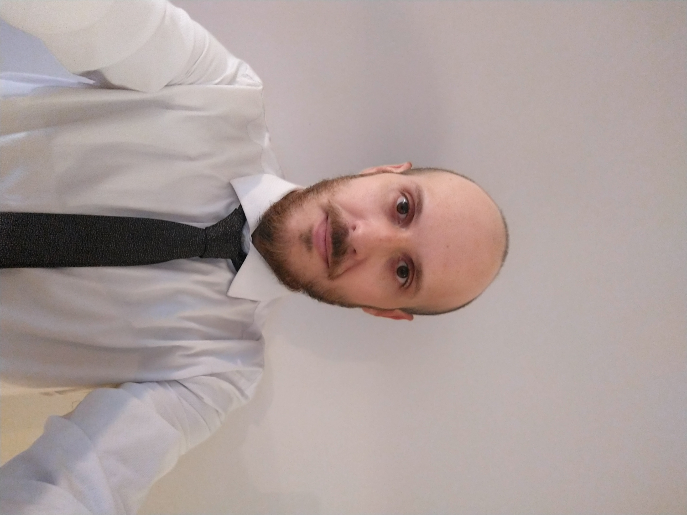

Francisco Tiphaine
Edad: 33 años
Domicilio: Av. Del Libertador 6644, Belgrano, Ciudad Autónoma de Buenos Aires
Telefono: 11-21754542
Aptitudes
- Proactividad, Liderazgo, Trabajo en equipo, Organización, Resolución de Problemas.
- Idiomas: Ingles - Intermedio
Experiencia Laboral
- Analista Tecnico Senior - Superintendencia de Riesgos del Trabajo - may 2014/ actual
- Auxiliar administrativo - Cablevision
- Administrativo Contable - Colegio Padre Vicente Sauras
Perfil
Me gusta hacer deportes extremos.
Me gusta salir a comer afuera e ir al cine.
No me gusta dormir a la intemperie.